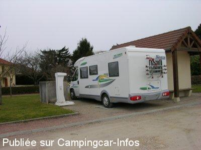

ASN = Aire de services avec stationnement nuit possible de :
SORNAY
(N° 710)
Accès/adresse :
Rue de la Mare aux Prêtres D971
71500 SORNAY
71500 SORNAY
Latitude : (Nord) 46.62646° Décimaux ou 46° 37′ 35′′
Longitude : (Est) 5.18031° Décimaux ou 5° 10′ 49′′
Tarif : Gratuit
Type de borne : FLOT BLEU
Services :


Commerces
Autres informations :
Ouvert toute l'année
10 emplacements
Tel : +33(0)385 827 326

Le 18/03/2009 par leviking.d
de
mirol49
le 05/07/2014 :
bonne nuit malgré la route toute proche et toujours tout gratuit même l'électricité. Dommage privé de croissant la boulangerie étant fermée le mercredi. J'ai pris du pain la veille en arrivant.
bonne nuit malgré la route toute proche et toujours tout gratuit même l'électricité. Dommage privé de croissant la boulangerie étant fermée le mercredi. J'ai pris du pain la veille en arrivant.
de
dominique flambard
le 18/03/2009 :
La borne de services de Sornay est opérationnelle l'hiver, bien pratique quand celle de Louhans est hors services.
La borne de services de Sornay est opérationnelle l'hiver, bien pratique quand celle de Louhans est hors services.
de
nenettemamita
le 11/06/2007 :
Aire très pratique, 2 possibilités de stationnement, à côté de la borne Flot Bleu ou derrière la mairie, tous services gratuits même EDF, merci à la mairie. Dommage que des cochons ne respectent pas les toilettes et volent les ampoules, sinon rien à dire.
Aire très pratique, 2 possibilités de stationnement, à côté de la borne Flot Bleu ou derrière la mairie, tous services gratuits même EDF, merci à la mairie. Dommage que des cochons ne respectent pas les toilettes et volent les ampoules, sinon rien à dire.
de
metens thierry
le 06/08/2006 :
Cette aire est très propre, les WC aussi et nous avons passé une nuit plutot tranquille. Dommage que certains camions ne s'arrêtent pas mais non......
Cette aire est très propre, les WC aussi et nous avons passé une nuit plutot tranquille. Dommage que certains camions ne s'arrêtent pas mais non......